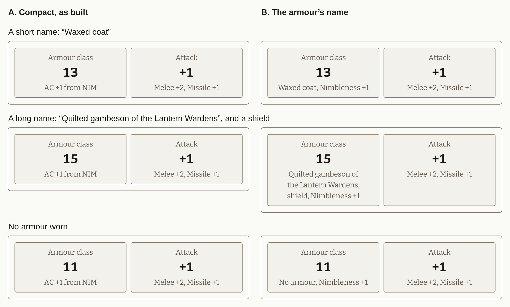
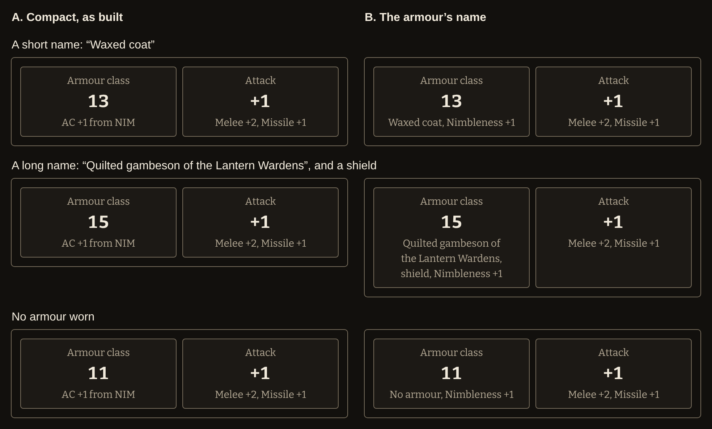
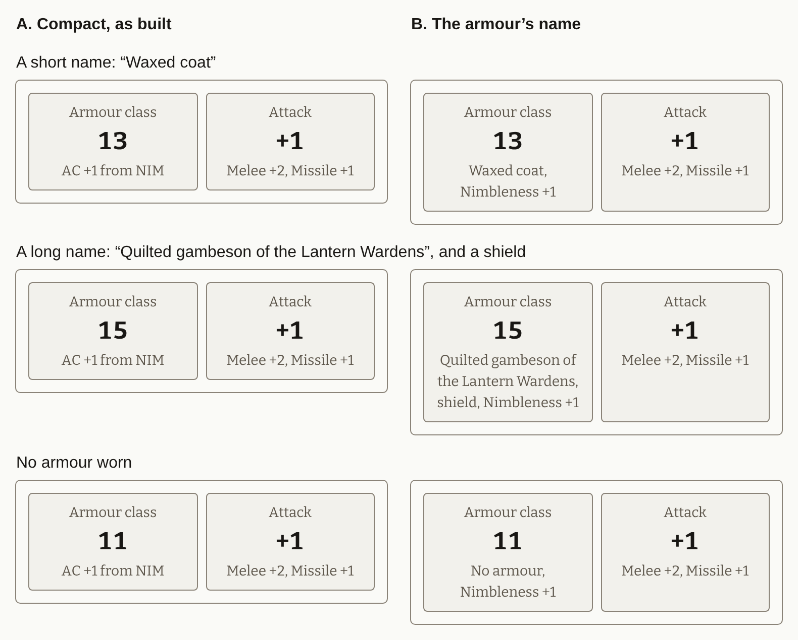
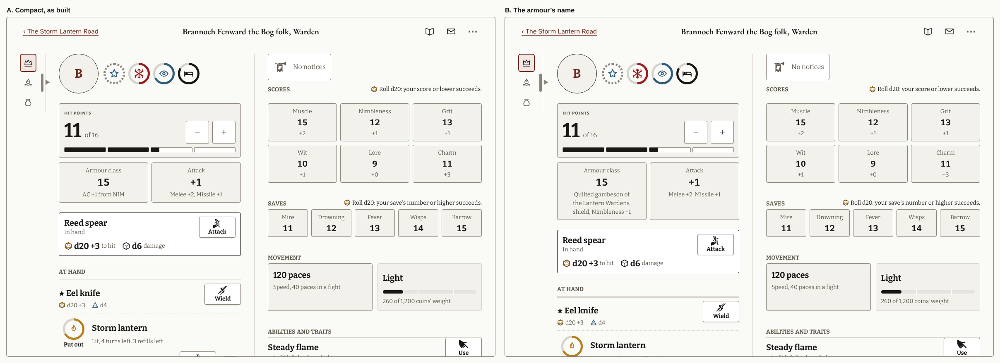
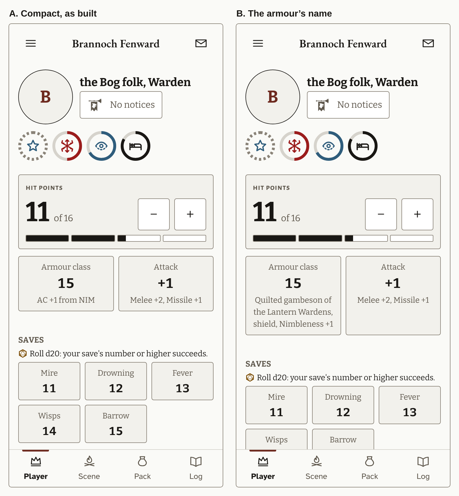

Not ruled. For the driver's brief of 2026-11-24 (row mock-39-7a), after Francis's word on page 38's finding 7, the armour's name in the armour class tile: "show me both". A is the quiet line as built ("AC +1 from NIM"; ruling B9 of 2026-10-29: the quiet line "stays compact"). B is page 38's line with the armour's name ("Waxed coat, Nimbleness +1"). Each is drawn for a short armour name, a long one, and no armour worn.
How these are made. As on page 38: pictures of the built screen from main (the layout page, the sample character Brannoch; invented names only), with the tile's line and its figure changed in the page. The tile's own styles do the wrapping: nothing is added, cut or clamped. The figures 13, 15 and 11 are put in by hand, not worked out by the app. The Attack tile beside it is left as built.
⚑ Words B's words for no armour ("No armour, Nimbleness +1") are not ruled: they are the plainest reading, drawn so there is something to judge. The other reading is the score alone ("Nimbleness +1"), not drawn.
Light. The tile is 216 px wide.A: the same one line in all three states, the tile 97 px tall; the line says nothing of what is worn. B: one line for "Waxed coat" and for no armour (97 px); three lines for the long name (the tile 139 px tall). The Attack tile grows to match, with 42 px of empty room, and everything below moves down 42 px. No sideways scroll in any (measured).

The same in dark.The line is 14 px in the Muted colour on the tile's fill: 6.3 to 1 in light, 7.6 to 1 in dark (measured). The same colour and size both ways.

The tile is 168 px wide.A: one line in all three states (97 px). B: two lines even for "Waxed coat" and for no armour (118 px, 21 more); three lines for the long name (139 px, 42 more). So with B on a phone the tile is taller than as built in every state drawn, and its height changes with what is worn. No sideways scroll in any (measured).

A tablet held sideways: with B the weapon in hand and "At hand" start 42 px lower; the right column does not move.

A phone: with B the saves start 42 px lower, and the second row of saves is cut by the tab bar at the foot (its names still show).

One line, not a recommendation: B reads better where it fits on one line (a tablet, an ordinary name), because it says what he wears in words the screen already uses; A is the steadier of the two, one line in every state and at every width, but it never says what is worn and keeps the two short forms.
impeccable critique, of this page's frames)The skill here is a condensed port without its tooling, read from its file: no detector or linter ran; this is a read of the pictures above and of the measures taken with them. It changes nothing: Francis picks by number. Surface: an app screen used at the table (the skill's "Operate" mode: scanning and consistency over expression).
| Heuristic | A | B | Why |
|---|---|---|---|
| Visibility of system status | 2 | 3 | B shows what is worn; A shows only the score's part. |
| Match to the user's language | 2 | 3 | A keeps "AC" and "NIM", which the screen spells out nowhere; B uses the words the tile and the score already use. |
| User control and freedom | 3 | 3 | The same tap, the same pop-up. |
| Consistency | 3 | 2 | A's tile is one height everywhere; B's changes with the armour and the width. |
| Error prevention | 3 | 3 | No target changes; B's tile only gets bigger. |
| Recognition over recall | 2 | 3 | With A the player must remember or tap to know what counts. |
| Flexibility and efficiency | 3 | 3 | Unchanged. |
| Minimalist design | 3 | 2 | B repeats what the pop-up lists, and on a phone costs 21 to 42 px. |
| Error recovery | 2 | 2 | No error, offline or loading state is drawn on this page. |
| Help and documentation | 3 | 3 | The tap still says how the figure is worked out. |
| Total | 26 of 40 | 27 of 40 | Close: each wins what the other loses. |
What works. Both keep the tile as approved: the same type, colour and tap; the figure stays the loudest thing. B's short case on a tablet is the cleanest frame on the page. Cognitive load and hierarchy: A is the lighter at a glance; B's three-line case puts more words under the figure than the figure can carry, and leaves the Attack tile half empty beside it. Both suit the mode (a screen to glance at) except B with a long name.
layout)harden)clarify)clarify)distill)harden)harden)adapt)Walked as: a first-time player (A: "NIM" means nothing yet; B: reads at once); a player on a phone, interrupted mid-fight (wants the figure only: A's steady tile serves better; B moves the saves down); a keyboard or screen-reader user (the tile's spoken name is the figure and "how it's worked out" both ways; whether B's line is read too was not tested with a reader). Questions for Francis: A, B, or A in whole words (3)? If B: two lines at most (2)? What does B say with no armour (4)?
Checked, measured on the built screen: the tile 216 px wide on the tablet and 168 on the phone; the line's count and the tile's height in all eighteen tiles (A always one line, 97 px; B 97, 139, 97 on the tablet and 118, 139, 118 on the phone); the Attack tile's height following; no sideways scroll at 1180 or 375 px; the line 14 px, 6.3 to 1 in light and 7.6 to 1 in dark. Nothing new is drawn: the built tile's own tokens, no new colour or size, nothing under 14 px. No button is added, none disabled, no confirm. Messy data: the long name, no armour. Invented names only.
Not checked or not drawn. The 39-3 tablet picture is shown here at about half its size, so its words are small on this page: open the picture itself to read it. A tablet held upright (820 px). The phone in dark. Larger text. A score that adds nothing, a figure set by hand (the built line then reads "set by hand"), armour not identified or with no base chosen. Loading, offline and error states. A setting where a lower figure is better. The figures are typed in, so no frame proves the app would work them out so. The Attack tile keeps its built words ("Missile" with a capital), page 38's fix for it not applied, so that only one thing differs between A and B. These are pictures of the built screen with words changed in the page, not hand-drawn frames, so the page has no dark column: the dark frame is its own picture. The plan this row belongs to (dec-14-player-audit-fixes) was not on main when this was drawn, so its row 7a was not read.